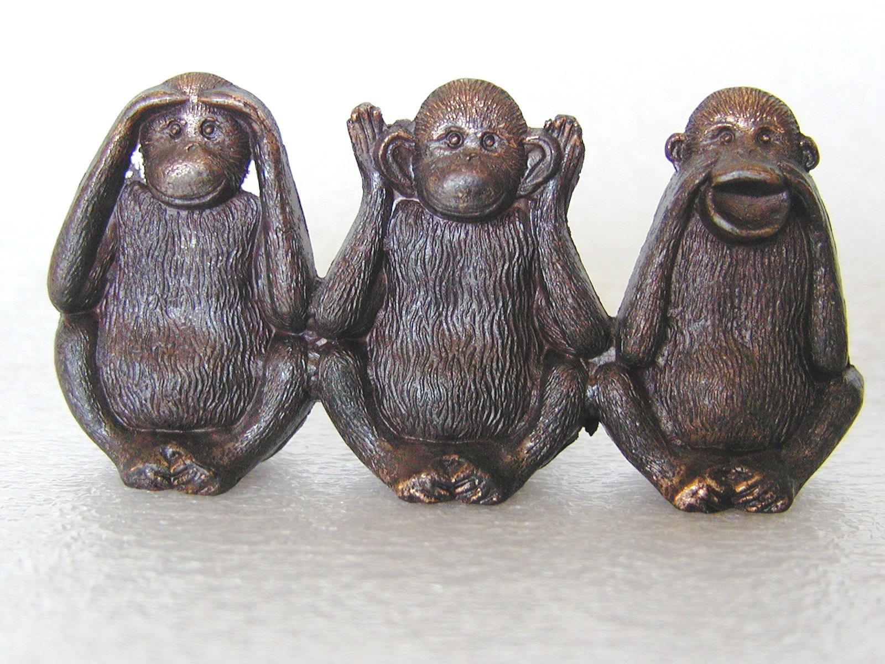

Project 4: Static Evaluator
Group members:
Chris “See-No-Evil” Hall
Adam Even “Hear-No-Evil” Engel
Tim “Speak-No-Evil” Duffy

Purpose:
Develop a static evaluator to determine the best next move for a player in a game of Atropos.
Implementation:
We utilized the Java programming language for this project using the Eclipse IDE. The program implements our own algorithms to score each potential move, which is based on the number of safe moves we will have on our next turn. We assume that our opponent moves into the position that will minimize the score for our next turn.
Development:
Our program determines the best possible move in 5 stages:
1) Parsing the game board:
In order to run our program, the Atropos game board and information about the last move made must be passed in as a command line argument. The first step we take is to translate the given string into an array. This array is what we base all of our evaluation upon. We also keep track of the position of the last move made.
2) Determining all possible safe moves
Once we have put the game board into an easy to search structure, we use the information given to us about the last move to begin our search. For each open neighbor, we determine a score, based on the move we assume our opponent will make next (see next section). Once the scores for all colors in all open neighbors has been determined, we choose the move with the highest score.
3) Determining the opponent's best possible move from our own possible moves.
We use the same logic for determining our possible safe moves to determine those of the opponent. Essentially, our program assumes the opponent thinks the same way it does and calculates their ideal move correspondingly.
4) Maximizing the number of options for our next turn.
Yup, you guessed it. We use the same algorithm again to determine our best next move based on the opponent’s “best move”. This is the crux of the prediction and how we determine where to move. We prune the moves that don’t allow us a winning move, narrowing down our choices considerably.
5) Handling special cases
Our program has the capability of handling certain special cases that may arise during the course of the game. If our program is given the first turn, we always begin in the same position - the center of the first (widest) row. In a situation where the opponent’s last move has left no open neighbors, our program scans the board for the first available safe move. If there are no safe legal moves available, we gracefully choose a spot at random, and accept defeat.
In the course of our calculations, we make a couple assumptions. First and foremost, we assume that the opponent will make the best possible move for itself using logic similar to ours. Second, we assume that a decision tree of height 3 is enough to provide a satisfactory prediction. This allows our program to make its move based on the possible moves it can make the following turn.
Results:
To test the effectiveness of our program, we ran several matches against a Default Atropos Player. In the 10 matches we ran, our program won 80% of the matches. This is a small sample size, but we like to think that it reflects reality. We also ran the program through ten matches against itself. As expected, it won roughly 50% of the time. Interestingly, the player who goes second wins in 27 moves, 100% of the time, when our program runs against itself.
Instructions for Execution:
To use our program with the Atropos Game interface, use the AtroposGame class.
To compile: "javac ThreeMonkeeyz.java " or simply “javac *.java”
To run: “java AtroposGame <size> “java ThreeMonkeeyz” <second script optional>”
You can also run the multi-game bash scripts, where:
./repeater.sh runs our program against itself 10 times with height=7
./repeaterAgainstDefault.sh runs our program against the default player 10 times with height=7
./repeaterAgainstDefaultRandomHeight.sh runs our program 10 times against the default with random heights of [5,10].